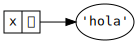

Programación imperativa
Ricardo Pérez López
IES Doñana, curso 2019/2020
1 Modelo de ejecución
1.1 Máquina de estados
La programación imperativa es un paradigma de programación basado en el concepto de sentencia.
Un programa imperativo está formado por una sucesión de sentencias que se ejecutan en orden.
Una sentencia es una instrucción del programa que lleva a cabo una de estas acciones:
Cambiar el estado interno del programa, normalmente mediante la llamada sentencia de asignación.
Cambiar el flujo de control del programa, haciendo que la ejecución se bifurque (salte) a otra parte del mismo.
El modelo de ejecución de un programa imperativo es el de una máquina de estados, es decir, una máquina que va pasando por diferentes estados a medida que el programa va ejecutándose.
En programación imperativa, el concepto de tiempo cobra mucha importancia: el programa actuará de una forma un otra según el estado en el que se encuentre, es decir, según el momento en el que estemos observando al programa.
Eso significa que, ante los mismos datos de entrada, una función puede devolver valores distintos en momentos distintos.
En programación funcional, en cambio, el comportamiento de una función no depende del momento en el que se ejecute, ya que siempre devolverá los mismos resultados ante los mismos datos de entrada.
Eso significa que, para modelar el comportamiento de un programa imperativo, ya no nos vale el modelo de sustitución.
1.2 Secuencia de instrucciones
Un programa imperativo es una secuencia de instrucciones, y ejecutar un programa es provocar los cambios de estado que dictan las instrucciones en el orden definido por el programa.
Las instrucciones del programa van provocando transiciones entre estados, haciendo que la máquina pase de un estado al siguiente.
Para modelar el comportamiento de un programa imperativo tendremos que saber en qué estado se encuentra el programa, para lo cual tendremos que seguirle la pista desde su estado inicial al estado actual.
Eso básicamente se logra «ejecutando» mentalmente el programa instrucción por instrucción y llevando la cuenta de los valores ligados a sus identificadores.
2 Asignación destructiva
2.1 Variables
Una variable es un lugar en la memoria donde se puede almacenar un valor.
El valor de una variable puede cambiar durante la ejecución del programa.
A partir de ahora, un identificador no se liga directamente con un valor, sino que tendremos:
Una ligadura entre un identificador y una variable.
La variable almacena el valor.

2.2 Estado
La ligadura es la asociación que se establece entre un identificador y una variable.
El estado de una variable es el valor que tiene una variable en un momento dado.
Por tanto, el estado es la asociación que se establece entre una variable y un valor.

Tanto las ligaduras como los estados pueden cambiar durante la ejecución de un programa imperativo.
El estado de un programa es el conjunto de los estados de todas sus variables.
2.3 Sentencia de asignación
El estado de una variable se cambia usando la sentencia de asignación.
Es la misma instrucción que hemos estado usando hasta ahora para ligar valores a identificadores, pero ahora, en el paradigma imperativo, tiene otro significado:
Significa que el identificador
xestá ligado a una variable cuyo valor pasa a ser4.La asignación es destructiva porque al cambiar un valor a una variable se destruye su valor anterior. Por ejemplo, si ahora hacemos:
El valor de la variable a la que está ligada el identificador
xpasa ahora a ser9, perdiéndose el valor4anterior.
Por abuso del lenguaje, se suele decir:
«se asigna el valor
9a la variablex»en lugar de:
«se asigna el valor
9a la variable ligada al identificadorx»Aunque esto simplifica las cosas a la hora de hablar, hay que tener cuidado, porque llegará el momento en el que podamos tener varios identificadores distintos ligados a la misma variable.
Cada nueva asignación provoca un cambio de estado en el programa.
En el ejemplo anterior, el programa pasa de estar en un estado en el que la variable
xvale 4 a otro en el que la variable vale9.Al final, un programa imperativo se puede reducir a una secuencia de asignaciones realizadas en el orden dictado por el programa.
Este modelo de funcionamiento está estrechamente ligado a la arquitectura de un ordenador: hay una memoria formada por celdas que contienen datos que pueden cambiar a lo largo del tiempo según dicten las instrucciones del programa que controla al ordenador.
2.4 Evaluación de expresiones con variables
Al evaluar expresiones, las variables actúan de modo similar a las ligaduras de la programación funcional, con la única diferencia de que su valor puede cambiar a lo largo del tiempo, por lo que deberemos seguirle la pista a las asignaciones que sufra dicha variable.
Todo lo visto hasta ahora sobre marcos, ámbitos, sombreado de variables, entornos, etc. se aplica igualmente a las variables.
2.5 Constantes
En programación funcional no existen las variables y un identificador sólo puede ligarse a un valor (un identificador ligado no puede re-ligarse a otro valor distinto).
En la práctica, eso significa que un identificador ligado actúa como un valor constante que no puede cambiar durante la ejecución del programa.
El valor de esa constante es el valor al que está ligado el identificador.
En programación imperativa, los identificadores se ligan a variables, que son las que realmente contienen los valores.
Una constante en programación imperativa sería el equivalente a una variable cuyo valor no puede cambiar durante la ejecución del programa.
Muchos lenguajes de programación permiten definir constantes, pero Python no es uno de ellos.
En Python, una constante es una variable más, pero es responsabilidad del programador no cambiar su valor durante todo el programa.
Python no hace ninguna comprobación ni muestra mensajes de error si se cambia el valor de una constante.
En Python, por convenio, los identificadores ligados a un valor constante se escriben con todas las letras en mayúscula:
El nombre en mayúsculas nos recuerda que
PIes una constante.Aunque nada nos impide cambiar su valor (cosa que debemos evitar):
3 Mutabilidad
3.1 Tipos mutables e inmutables
En Python existen tipos cuyos valores son inmutables y otros que son mutables.
Un valor inmutable es aquel cuyo estado interno no puede cambiar durante la ejecución del programa.
Los principales tipos inmutables son los números (
intyfloat), los booleanos (bool) y las cadenas (str).Un valor mutable puede cambiar durante la ejecución del programa.
El principal tipo mutable es la lista (
list).
3.1.1 Inmutables
- Un valor de un tipo inmutable no se puede cambiar.


- Por tanto, las variables comparten el valor inmutable común.
Con las cadenas sería exactamente igual.
Si tenemos:

y luego hacemos:
se crea una nueva cadena y se la asignamos a la variable
x.Es decir: la cadena
'hola'original no se cambia, sino que desaparece y queda sustituida por una nueva.

- Por tanto, con las cadenas pasa lo mismo que con los números (ya que ambos son inmutables).


- Es decir: las variables comparten el valor inmutable común (no es necesario crear en memoria dos cadenas iguales, ya que nunca se van a poder modificar).
Aunque las cadenas son datos inmutables, también son datos compuestos y podemos acceder individualmente a sus elementos componentes y operar con ellos aunque no podamos cambiarlos.
Para ello podemos usar las operaciones comunes a toda secuencia de elementos (una cadena también es una secuencia de caracteres):
| Operación | Resultado |
|---|---|
x in s |
True si x está en s |
x not in s |
Lo contrario |
s[i] |
(Indexación) El i-ésimo elemento de s, empezando por 0 |
s[i:j] |
(Slicing) Rodaja de s desde i hasta j |
s[i:j :k] |
Rodaja de s desde i hasta j con paso k |
s.index(x) |
Índice de la primera aparición de x en s |
s.count(x) |
Número de veces que aparece x en s |
- El operador de indexación consiste en acceder al elemento situado en la posición indicada entre corchetes:
+-----+-----+-----+-----+-----+-----+
s | 124 | 333 | 'a' | 3.2 | 9 | 53 |
+-----+-----+-----+-----+-----+-----+
0 1 2 3 4 5
-6 -5 -4 -3 -2 -1
- El slicing (hacer rodajas) es una operación que consiste en obtener una subsecuencia a partir de una secuencia, indicando los índices de los elementos inicial y final de la misma:
+---+---+---+---+---+---+
s | P | y | t | h | o | n |
+---+---+---+---+---+---+
0 1 2 3 4 5 6
-6 -5 -4 -3 -2 -1Hemos visto que los números y las cadenas comparten sus valores entre variables.
Pero es importante tener en cuenta que no todos los tipos inmutables comparten sus valores entre variables.
Hay valores de tipos inmutables, como las tuplas y los rangos, que aún siendo inmutables no comparten sus valores entre variables.
Por tanto, lo que podemos afirmar es que:
Si son mutables, seguro que no comparten sus valores.
Si son inmutables, puede que los compartan (números y cadenas) y puede que no (tuplas, rangos, etc.).
En la práctica, no es demasiado importante saber si se comparten o no los valores entre variables. Importa más saber si dos identificadores comparten variable (cosa que veremos luego).
3.1.2 Mutables
Los valores de tipos mutables, en cambio, pueden cambiar su estado interno durante la ejecución del programa.
Hasta ahora, hemos visto un único tipo mutable: la lista.
Una lista puede cambiar el valor de sus elementos, aumentar o disminuir de tamaño.
Al cambiar el estado de una lista no se crea una nueva lista, sino que se modifica la ya existente:
Las listas, como toda secuencia mutable, se pueden modificar usando ciertas operaciones:
Los operadores de indexación y slicing:
+-----+-----+-----+-----+-----+-----+ | 124 | 333 | 'a' | 3.2 | 9 | 53 | +-----+-----+-----+-----+-----+-----+ 0 1 2 3 4 5 -6 -5 -4 -3 -2 -1Métodos propios de las listas, como
append,clear,insert,remove,reverseosort.
(\underline{s} y \underline{t} son listas, y \underline{x} es un valor cualquiera)
| Operación | Resultado |
|---|---|
s[i] = x |
El elemento i-ésimo de s se sustituye por x |
s[i:j] = t |
La rodaja de s desde i hasta j se sustituye por t |
s[i:j:k] = t |
Los elementos de s[i:j:k] se sustituyen por t |
del s[i:j] |
Elimina los elementos de s[i:j] \leftrightarrow s[i:j] = [] |
del s[i:j:k] |
Elimina los elementos de s[i:j:k] |
s.append(x) |
Añade x al final de s \leftrightarrow s[len(s):len(s)] = [x] |
s.clear() |
Elimina todos los elementos de s \leftrightarrow del s[:] |
s.extend(t) ós += t |
Amplía s con el contenido de t \leftrightarrow s [len(s):len(s)] = t |
s.insert(i , x) |
Inserta x en s en el índice i \leftrightarrow s[i:i] = [x] |
s.pop([i=-1]) |
Devuelve el elemento i-ésimo y lo elimina de s |
s.remove(x) |
Elimina el primer elemento de s que sea igual a x |
s.reverse() |
Invierte los elementos de s |
Partiendo de x = [8, 10, 7, 9]:
| Ejemplo | Valor de x después |
|---|---|
x.append(14) |
[8, 10, 7, 9, 14] |
x.clear() |
[] |
x.insert(3, 66) |
[8, 10, 7, 66, 9] |
x.remove(7) |
[8, 10, 9] |
x.reverse() |
[9, 7, 10, 8] |
3.1.3 Alias de variables
Cuando una variable que contiene un valor mutable se asigna a otra, se produce un fenómeno conocido como alias de variables, según el cual los dos identificadores se ligan a la misma variable (la comparten):
Por tanto, si cambiamos la lista desde
x,ytambién cambiará y viceversa (porque en realidad ambas son la misma variable):
3.1.3.1 id
Para saber si dos objetos son realmente el mismo objeto en memoria, se puede usar la función
id.La función
iddevuelve un identificador único para cada objeto en memoria.Por tanto, si dos objetos tienen el mismo
id, significa que son realmente el mismo objeto.En general, como ya estudiamos antes, los objetos inmutables idénticos tendrán el mismo
id(aunque no siempre, depende del tipo de objeto), mientras que los mutables tendrán siempreiddiferentes, pues serán siempre objetos distintos:
4 Efectos laterales
4.1 Concepto
Las funciones que hemos visto hasta ahora en programación funcional son funciones puras en el sentido de que lo único que hacen es calcular su resultado sin afectar al exterior de la función.
Cuando una función afecta a otras partes del programa decimos que es una función impura y que provoca efectos laterales, que son justamente los efectos que provoca en el exterior de la función.
Los casos típicos de efectos laterales son:
Cambiar el valor de una variable global
Realizar una operación de entrada/salida
También se considera efecto lateral a cualquier cambio que afecte a otras partes del programa de una manera no evidente o impredecible.
4.2 Transparencia referencial
En un lenguaje imperativo se pierde la transparencia referencial, ya que ahora el valor de una función puede depender no sólo de los valores de sus argumentos, sino también además de los valores de las variables libres que ahora pueden cambiar durante la ejecución del programa:
Por tanto, cambiar el valor de una variable global es considerado un efecto lateral, ya que puede alterar el comportamiento de otras partes del programa de formas a menudo impredecibles.
4.3 Entrada y salida por consola
Nuestro programa puede comunicarse con el exterior realizando operaciones de entrada/salida.
Interpretamos la palabra exterior en un sentido amplio; por ejemplo:
- El teclado
- La pantalla
- Un archivo del disco duro
- Otro ordenador de la red
La entrada/salida por consola se refiere a las operaciones de lectura de datos por el teclado y escritura por la pantalla.
Las operaciones de entrada/salida se consideran efectos laterales porque producen cambios en el exterior o pueden provocar que el resultado de una función dependa de los datos leídos.
4.3.1 print
La función
printimprime (escribe) por la salida (normalmente la pantalla) el valor de una o varias expresiones.Su sintaxis es:
<print> ::=print(<expresión>(,<expresión>)*
[, sep=<expresión>][, end=<expresión>])El
sepes el separador y su valor por defecto es' '(un espacio).El
endes el terminador y su valor por defecto es'\n'(el carácter de nueva línea).Las expresiones se convierten en cadenas antes de imprimirse.
Por ejemplo:
4.3.1.1 El valor None
Es importante resaltar que la función
printno devuelve el valor de las expresiones, sino que las imprime (provoca el efecto lateral de cambiar el estado de la pantalla haciendo que aparezcan nuevos caracteres.La función
printcomo tal no devuelve ningún valor, pero como en Python todas las funciones devuelven algún valor, en realidad lo que ocurre es que devuelve un valorNone.Nonees un valor especial que significa ningún valor y se utiliza principalmente para casos en los que no tiene sentido que una función devuelva un valor determinado, como es el caso deprint.Pertenece a un tipo de datos especial llamado
NoneTypecuyo único valor posible esNone.Podemos comprobar que, efectivamente,
printdevuelveNone:
4.3.2 input
La función
inputlee datos desde la entrada (normalmente el teclado) y devuelve el valor del dato introducido.Siempre devuelve una cadena.
Su sintaxis es:
<input> ::=input([<prompt>])Por ejemplo:
Provoca el efecto lateral de alterar el estado de la consola imprimiendo el prompt y esperando a que desde el exterior se introduzca el dato solicitado (que en cada ejecución podrá tener un valor distinto).
5 Saltos
5.1 Incondicionales
Un salto incondicional es una ruptura abrupta del flujo de control del programa hacia otro punto del mismo.
Se llama incondicional porque no depende de ninguna condición, es decir, se lleva a cabo siempre que se alcanza el punto del salto.
Históricamente, a esa instrucción que realiza saltos incondicionales se la ha llamado instrucción GOTO.
El uso de instrucciones GOTO es considerado, en general, una mala práctica de programación ya que favorece la creación del llamado código espagueti: programas con una estructura de control tan complicada que resultan casi imposibles de mantener.
En cambio, usados controladamente y de manera local, puede ayudar a escribir soluciones sencillas y claras.
Python no incluye la instrucción GOTO pero se puede simular instalando un paquete llamado
goto-statement:$ pip3 install --user goto-statementSintaxis:
<goto> ::=goto<etiqueta>
<label> ::=label<etiqueta>
<etiqueta> ::=.<identificador>
5.2 Condicionales
Un salto condicional es un salto que se lleva a cabo sólo si se cumple una determinada condición.
En Python, usando el paquete
with_goto, podríamos implementarlo de la siguiente forma:<salto_condicional> ::=if<condición>:goto<etiqueta>
Ejemplo de uso:
Bibliografía
Aguilar, Luis Joyanes. 2008. Fundamentos de Programación. Aravaca: McGraw-Hill Interamericana de España.
Pareja Flores, Cristóbal, Manuel Ojeda Aciego, Ángel Andeyro Quesada, and Carlos Rossi Jiménez. 1997. Desarrollo de Algoritmos Y Técnicas de Programación En Pascal. Madrid: Ra-Ma.